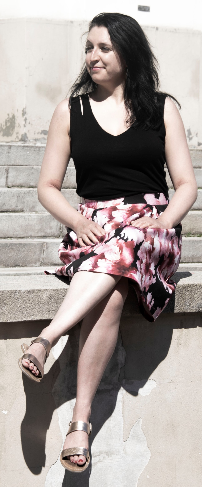
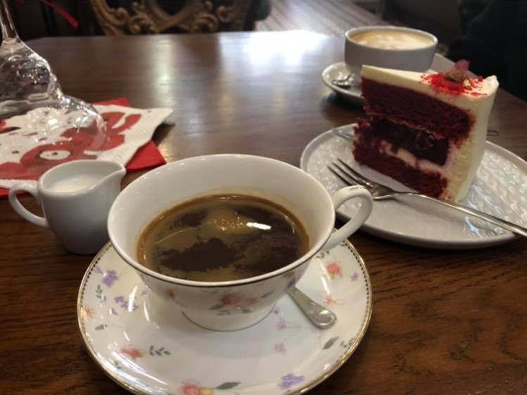

Aňa konečně na internetu !
Ahoj, jmenuji se Andrea a přátelé mě oslovují "Aňo", "Andrej" nebo "Andri". Ráda se učím novým věcem a nedávno jsem se přihlásila do kurzu Tvorby webu u CZECHITAS, kde jsem dostala za svůj první úkol přenést informace o svém JÁ do online prostředí. Tak jsem tady a vítám Vás na své první e-vizitce!
Nejprve bych Vám chtěla sdělit pár vět o tom kdo jsem, kde v současné době žiji, odkud pocházím a co vlastně dělám, ale hlavně se s Vámi podělit o své záliby, mezi které patří především cestování a sport, dále pak návštěvy nových i mých oblíbených kavárem a úplně nejraději ze všeho sdílím své záliby se svými přáteli.
Pár slov o mně

Kdo tedy vlastně jsem? Jsem žena, středního vzrůstu, s hnědými kudrnatými vlasy a modrými oči. Již přes 10 let žiji v Brně, kde jsem původně přišla studovat. Během studií mě Brno nadchlo a já se rozhodla tu ještě pár let zústat a zatím ve svém plánu setrvávám.
Své dětství jsem strávila v Novém Jičíně, kde jsem se narodila. Že jsem ze severní Moravy vetšinou lidé poznají na první dobrou, a to díky mému přízvuku.
Pokud jde o má studia a práci, vystudovala jsem právnickou fakultu na Masarykově univerzitě v Brně. Následně jsem nastoupila na Úřad pro ochranu hospodářské soutěže, kde jsem pracovala nejprve na Mezinárodním oddělení a nyní pracuji na Oddělení fúzí. Více informací o mém studiu, stážích i pracovních zkušenostech najdete na mém profilu na LinkedIn.
Cestování
Když mám volných pár dní v kuse, nějakého parťáka k sobě a zrovna po světě neřádí covid, trávím svůj volný čas cestováním. Ráda podnikám výlety po blízkém okolí, ale i do vzdálenějších zemí - po Evropě i po světě...
Cestování letos
Letošní rok jsem započala návštěvou ukrajinského Lvova, který mě mile překvapil svou kavarenskou kulturou i vynikajícím jídlem. Nešlo to jinak než trávit většinu času v kavárnách a restauracích, jelikož jsem Lvov navštívila v únoru a počasí bylo chladné, deštivé a celkově převážně pošmourné.

Léto jsem pak trávila jen a jen v České republice a to zdoláváním kopců v Beskydech a Jeseníkách, válením se u přehrady v Brně a výletem za vínem a burčákem v Mikulově.
Cestování v minulosti
Pokud jde o zahraniční destinace, posledních pár dovolených jsem strávila v hlavních městech a na turistických stezskách v Portugalsku a Španělsku. Během svého studentského života jsem pak studovala jeden semestr v Litvě a během letních prázdnin pracovala například v USA, v Anglii a ve Skotsku, kde jsem kromě návštěvy místních pamětihodností a přírody stihla poznat i místní kulturu. V mezidobí jsem pak navštěvovala převážně evropská hlavní města, kde jsem strávila většinou prodloužený víkend.
Sportování
Obecné tvrzení, že sportování člověka nabíjí pozitivní energií, pro mě platí dvojnásob. Po sportování mám hned lepší náladu! Sportovat chodím přes týden i o víkendech. Přes týden většinou navštevuji něco časově méně náročného - skupinové lekce, když dle chuti střídám jumping (když chci vybít energii), powerjogu (když chci protáhnout tělo) či posilování (když nechci ani vybít energii ani protáhnout své tělo).
Přes víkendy, když je času na sportování více a venku je hezké počasí, nejraději trávím volný čas aktivně pěšími výlety po okolí Brna i Nového Jičína. V zimě pak rádá lyžuji, běžkuji i bruslím.
Kavárny
S výletováním po okolí se dá skvěle skloubit má další záliba, kterou je objevování a navštěvování nových i mých oblíbených kaváren, kterých je v Brně nepočítaně. I když nejoblíbenější je samozřejmě jen jedna. Navíc tato záliba se dá výborně využít i v případě deštivého víkendu. Ráda jen tak posedím v hezké kavárně, popovídám si s přáteli nad šálkem dobré kávy o všem možném (i nemožném) a u toho vyzkouším výborný dortík.

Sdílení zálib s přáteli
Úplně nejraději sdílím mé záliby s přáteli, protože jak se říká "ve dvou se to lépe táhne". A i když zrovna nesportuji nebo necestuji po světě, na posezení a pokec u šálku dobré kávy je čas vždy - nebo aspoň - skoro vždycky;)
V případě, že Vás můj profil nadchnul, sdílíte také některou z mých zálib a hledáte k jejich provozování parťáčku či byste chtěli se mnou jen tak prohodit pár slov, kontaktuje mě prostřednictvím mého profilu na Facebooku.